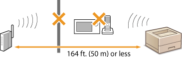

Installation/Settings Problems
Together with this section, see Common Problems.
Problems with the Wireless/Wired LAN Connection
The wireless LAN and wired LAN cannot be connected at the same time.
The wireless LAN and wired LAN cannot be connected at the same time. You can use the USB and wireless LAN or the USB and wired LAN at the same time.
Remote UI is not displayed.
If the machine is connected to a wireless LAN, check that the  (Wi-Fi) indicator is lit and the IP address is set correctly, and then start the Remote UI again.
(Wi-Fi) indicator is lit and the IP address is set correctly, and then start the Remote UI again.
Front Side
Viewing Network Settings
(Wi-Fi) indicator is lit and the IP address is set correctly, and then start the Remote UI again. Front Side
Viewing Network Settings
If the machine is connected to a wired LAN, check that the cable is connected firmly and the IP address is set correctly, and then start the Remote UI again.
Connecting to a Wired LAN
Viewing Network Settings
Connecting to a Wired LAN
Viewing Network Settings
Are you using a proxy server? If you are using a proxy server, add the machine's IP address to the [Exceptions] list (addresses that do not use the proxy server) in the Web browser's proxy settings dialog.
Is communication on your computer restricted by a firewall? If the Remote UI cannot be displayed because of incorrect settings, use the reset button to initialize the system management settings.
Restricting Communication by Using Firewalls
Initializing by Using the Reset Button
Restricting Communication by Using Firewalls
Initializing by Using the Reset Button
A connection to a network cannot be established.
The connection settings may not be set correctly. Use the MF/LBP Network Setup Tool to configure the connection settings.
Printer Driver Installation Guide
Printer Driver Installation Guide
When connecting to a wireless LAN, check whether the machine is properly installed and ready to connect to the network.
When the machine cannot connect to the wireless LAN
When the machine cannot connect to the wireless LAN
You are unsure of the IP address that was set.
You cannot change from wireless LAN to wired LAN.
Did you use the MF/LBP Network Setup Tool to configure the wired LAN connection settings? If you did not, you cannot change the connection method from wireless LAN to wired LAN for this machine. When configuring the settings, select [Custom Setup] for the setting method.
Printer Driver Installation Guide
Printer Driver Installation Guide
When the machine is connected to a wired LAN connection, the LNK indicator is off.
Use a straight-through Ethernet cable for the wired LAN connection.
Check that the hub or router is turned ON.
Do not connect the cable to the UP-LINK (cascade) port of the hub.
Change the LAN cable.
When the machine cannot connect to the wireless LAN
 |
|
 |
|
Check the status of your computer
Have the settings of the computer and the wireless router been completed?
Are the cables of the wireless router (including the power cord and LAN cable) correctly plugged in?
Is the wireless router turned ON?
If the problem persists even after checking the above:
Turn OFF all of the devices, and then turn them ON again.
Wait for a while, and try again to connect to the network.
|
|
|
||||
 |
 |
Check whether the machine is turned ON
The
 (Power) indicator does not light if the machine is not turned ON. (Power) indicator does not light if the machine is not turned ON. If the machine is turned ON, turn it OFF, and then turn it back ON.
|
||
|
|
||||
 |
 |
Check the installation site of the machine and the wireless router
Is the machine too far from the wireless router?
Are there any obstacles such as walls between the machine and the wireless router?
Are there any appliances such as microwave ovens or digital cordless phones that emit radio waves near the machine?
 |
||
|
|
||||
 |
Reset the wireless LAN settings
|
 |
When you need to manually set up the connectionIf the wireless router is set up as described below, enter the required information manually.
The stealth function is enabled.
ANY connection refusal* is enabled.
The WEP key number to use is set to a number from 2 to 4.
The automatically generated WEP key (hexadecimal) is selected.
* A function in which the wireless router refuses the connection if the SSID of the device to be connected is set to "ANY" or is blank.
When you need to change the settings of the wireless routerIf the wireless router is set up as described below, change the settings of the router.
MAC address filtering is enabled.
When only IEEE 802.11n is used for the wireless communication, WEP is selected or the WPA/WPA2 encryption method is set to TKIP.
|
Problems with the USB Connection
Communication is not possible.
Exchange the USB cable. If the USB cable is a long one, exchange it for a shorter one.
If you are using a USB hub, connect the machine directly to your computer using a USB cable.
Problems via the Print Server
You cannot find the print server to connect to.
Are the print server and computer connected correctly?
Is the print server running?
Do you have user rights to connect to the print server? If you are not sure, consult the print server's administrator.
Is [Network discovery] enabled? (Windows Vista/7/8/Server 2008/Server 2012)
Enabling [Network discovery]
Enabling [Network discovery]
You cannot connect to a shared printer.
On the network, does the machine appear among the printers of the print server? If it is not displayed, contact the network or server administrator.
Displaying Shared Printers in the Print Server
Displaying Shared Printers in the Print Server